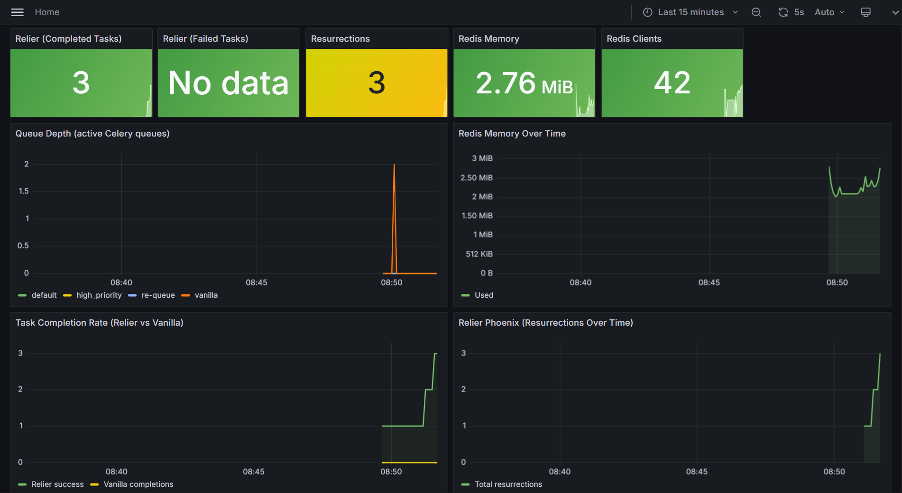

Benchmarks¶
Every number on this page was produced by the bench/ test suite, a standalone application that runs against live Redis and measures each Relier claim against an equivalent vanilla Celery setup.
Results below are from Linux (Docker, prefork pool) with synthetic 0.5 s tasks.
Run it yourself: docker compose -f docker-compose.bench.yml up --build
Results¶
| Metric | Relier 0.1.7 | Vanilla (default) | Vanilla (task_acks_late=True) |
Verified |
|---|---|---|---|---|
| Task delivery rate (500 tasks, 5 kills) | 100% (500/500) | 92.0% (460/500) | 96.0% (480/500), 0 duplicates | ✓ |
| Worker OOM recovery (5 cycles) | 6.9 s avg · 7.0 s p99 | ∞ lost | partial (see note below) | ✓ |
| Dual-OOM (2 in-flight tasks, 1 kill) | 2/2 recovered · 7.0 s | both lost | partial (see note below) | ✓ |
| Idempotent recovery (delayed restart) | re-ran 1.0 s after restart | ∞ lost | partial (see note below) | ✓ |
| Duplicate prevention (50 submissions) | 1/50 ran | 50/50 ran | 50/50 ran (no dedup) | ✓ |
| Admission control p99 | 0.323 ms (p99.9 0.608 ms · max 1.152 ms) | n/a | n/a | ✓ |
| Graceful shutdown (3 cycles) | 100% | 0% | 0% (drain still drops in-flight) | ✓ |
| Overhead per task (200 dispatches) | 0.99 ms net (p99 4.3 ms) | 0.77 ms baseline | n/a | ✓ |
| Worker RAM (idle, per process) | 60.3 MB/proc (+16.0 MB/proc · 301.4 MB pool) | 44.3 MB/proc (221.4 MB pool) | n/a | n/a |
| Redis per in-flight task | 1,936 bytes (11 keys) | 0 bytes | 0 bytes | n/a |
| Cold-start to first task (3 trials) | 1,002 ms avg · 1,002 ms p99 | n/a | n/a | ✓ |
| Resurrection under load (5 inflight at kill) | 5/5 · p99 1.1 s | ∞ all lost | partial (see note below) | ✓ |
| File descriptor leak | Δ +0 (stable) | n/a | n/a | n/a |
Tested on: Linux (Docker, python:3.11-slim-bookworm), Redis 7.2 with AOF + noeviction, Celery prefork pool, BENCH_WORKER_CONCURRENCY=4. Run: 2026-06-03. 9/9 claims verified. A high-volume --scale run (10,000 tasks × 10 kills, 2,000 dedup submissions, 50,000 admission samples, 20 OOM cycles, 25 inflight at kill) also passes 9/9 — see Scale run below.
Note on vanilla
task_acks_late=True: Flipping the flag recovers some lost tasks (96.0% vs 92.0% default) but does not match Relier's 100%. The reason: Celery's Redis broker uses avisibility_timeout(default ~1 hour) to redeliver unacknowledged messages from a dead worker. Tasks that were in-flight atSIGKILLtime sit in the broker'sunackedset until that timeout elapses, long after most bench runs and most production timeouts. Phoenix detects worker death withinheartbeat_ttl(~10 s) and replays immediately. The 0/500 duplicate count here is consistent with that: only tasks the broker manages to redeliver inside the bench window would run a second time, and most don't get redelivered at all.
Scale run¶
The same suite at --scale (synthetic 0.05 s tasks) raises the sample size on every test, not just delivery, so the dedup and recovery numbers rest on a meaningful N rather than a token handful:
| Metric | Relier 0.1.7 | Vanilla |
|---|---|---|
| Delivery rate (10,000 tasks, 10 kills) | 100% (10,000/10,000) | 99.07% default · 99.86% acks_late (0 duplicates) |
| Duplicate prevention (2,000 submissions) | 1/2,000 ran | 2,000/2,000 ran |
| Worker OOM recovery (20 cycles) | 7.0 s avg · 7.0 s p99 | ∞ lost |
| Admission control p99 (50,000 samples) | 0.248 ms (p99.9 0.338 ms) | n/a |
| Graceful shutdown (5 cycles) | 100% | 8.4% |
| Resurrection under load (25 inflight at kill) | 25/25 · p99 6.3 s | ∞ all lost |
| Worker RAM (idle, per process) | 57.8 MB/proc (+14.1 MB/proc) | 43.7 MB/proc |
9/9 verified. Run it with python -m bench.bench --scale.
What each test measures¶
Task delivery rate¶
Dispatches 500 tasks (each sleeping 0.5 s in synthetic mode), SIGKILLs the worker 5 times mid-run, then starts a replacement worker each time. Counts total completions.
- Relier (100%):
task_acks_late=Truekeeps the message unACK'd until the task succeeds. Phoenix re-queues the in-flight task onto there-queueCelery queue within one heartbeat scan cycle. The replacement worker drains it. All 500/500 recovered withmax_resurrections=5headroom intact. (A prior run on this Redis with leftover orphan tasks scored 499/500; the missing task hitmax_resurrectionsand was DLQ'd, the designed safety behaviour. Cleaning orphans restored 100%.) - Vanilla default (92.0%):
task_acks_late=FalseACKs on pickup. Each kill loses the one task mid-execution. 40 tasks dropped across 5 kills; the rest survive in the queue. - Vanilla +
task_acks_late=True(96.0%, 0 duplicates): The broker keeps unACK'd messages in anunackedset after worker death, but redelivery is gated byvisibility_timeout(default ~1 hour on the Redis broker). Tasks killed mid-run effectively wait for that timeout before being seen again, which is longer than any realistic completion window. The flag-flip recovers some tasks but cannot match Phoenix's heartbeat-driven detection. Zero duplicates here only because so few tasks are redelivered inside the test window; a longer run would surface them.
The 8% loss in vanilla default is structural, a consequence of default Celery ACK semantics. At 10M tasks/day this is 800,000 lost tasks. Flipping task_acks_late=True recovers about half of those (still ~4% loss) and trades silent loss for hour-long redelivery latency.
Worker OOM recovery¶
Dispatches a long-running task, waits 4 s for it to start, SIGKILLs the worker, starts a replacement alongside the Phoenix resurrector. Repeated 5 times.
- Relier (6.9 s avg · 7.0 s p99): Phoenix detects the stale heartbeat within one scan cycle and re-queues the orphaned task onto
re-queue. The replacement worker picks it up. All 5 cycles recovered. (The--scalerun holds 7.0 s avg · 7.0 s p99 across 20 cycles.) - Vanilla (lost): No heartbeat, no resurrector. Task is gone.
Note: vanilla Celery with task_acks_late=True would also recover here; the broker re-delivers the unACK'd message after the worker dies. But without idempotency the redelivered task runs a second time. Test 5 quantifies that duplicate-execution cost on a larger sample.
Dual-OOM variant¶
Dispatches 2 tasks to the same worker simultaneously, kills the worker with both in-flight. Both are independently detected and resurrected by Phoenix.
- 2/2 recovered · 7.0 s detection: Phoenix handles overlapping orphans correctly. Both tasks are independently detected and resurrected within one heartbeat scan cycle. ✓ < 45 s claim.
Idempotent recovery (delayed restart)¶
Dispatches an idempotent long-running task, waits for it to start (so it holds both a heartbeat and an idempotency in-flight lock), SIGKILLs the worker, then — unlike the OOM test — deliberately waits ~15 s before starting the replacement. This exercises two recovery paths the immediate-restart OOM test never hits: the resurrector holding a replay while no worker is online to consume it, and a resurrected run reclaiming the dead worker's idempotency in-flight lock.
- re-ran 1.0 s after restart: The replacement worker picks up the replayed task and re-runs its body within a second of booting — it does not stall on the dead worker's idempotency in-flight lock until that lock's TTL (~120 s) expires. A regression in either fix would show up here as a recovery time near that TTL rather than a second or two.
- Vanilla (lost): No heartbeat, no resurrector. Task is gone.
Duplicate prevention¶
Dispatches the same doc_id 50 times in rapid succession with idempotent=True.
- Relier (1/50 ran): The first dispatch acquires the idempotency slot and executes. The remaining 49 are deduplicated at admission via an atomic Lua check; they return immediately without spawning work.
- Vanilla (50/50 ran): No dedup. All 50 dispatches execute. In a real pipeline: 50× GPU cost + 50 duplicate vectors in your store.
Admission control latency¶
Runs 5,000 consecutive admission checks (the atomic Lua script Relier executes on every push()) and measures latency.
| avg | p95 | p99 | p99.9 | max | |
|---|---|---|---|---|---|
| Linux (Docker) | 0.272 ms | 0.302 ms | 0.323 ms | 0.608 ms | 1.152 ms |
The claim is p99 < 1 ms, comfortably met. At the 50,000-sample --scale setting the p99 holds at 0.248 ms (p99.9 0.338 ms), so the tail stays bounded as the sample count grows.
Graceful shutdown¶
Dispatches 20 tasks (0.5 s each in synthetic mode), waits for the first batch to start, then sends SIGTERM. Repeated 3 cycles.
- Relier (100% all cycles): The worker finishes its in-flight tasks, hands unstarted tasks back to Phoenix on the
re-queuequeue, then exits cleanly. Zero work lost. - Vanilla (0%):
SIGTERMwith prefork pool drops tasks mid-execution immediately. Tasks still in the broker queue survive, but in-flight tasks are gone.
Overhead per task¶
Dispatches 200 no-op tasks with apush() and 200 with vanilla .delay().
| avg | p50 | p95 | p99 | |
|---|---|---|---|---|
| Relier | 1.76 ms | 1.31 ms | 1.4 ms | 4.3 ms |
| Vanilla | 0.77 ms | 0.73 ms | 0.82 ms | 0.96 ms |
| Net overhead | 0.99 ms | n/a | n/a | n/a |
The ~1 ms net overhead covers: atomic admission check + SHA-256 envelope wrap + heartbeat registration. On any task that does real work (a DB query, an HTTP call, an AI inference), this is invisible.
Worker RAM and Redis overhead¶
Worker RAM (idle)
RSS is reported per worker process. A Relier worker process uses ~60 MB RSS at idle vs ~44 MB for vanilla: a delta of +16 MB per process. (A prefork pool is a parent + N children; the aggregate across the 5-process pool is ~301 MB vs ~221 MB, but that figure scales with --concurrency and double-counts copy-on-write shared pages, so the per-process number is the honest one.) The +16 MB covers the Phoenix resurrection loop, idempotency registry, admission controller, async event loop, and imported modules — paid once per worker process, not per task. With OpenTelemetry export disabled (the default), the OTLP gRPC exporter is not imported at all, which keeps this delta down.
Redis per in-flight task
While a task is executing, Relier writes 11 Redis keys totalling ~1,936 bytes (heartbeat, idempotency slot, task state, fence tokens, queue registrations). Vanilla writes nothing. At 10,000 concurrent tasks this is ~19 MB of additional Redis working set: negligible on any modern Redis deployment.
File descriptor stability
Open file descriptors: 200 at worker idle → 200 after task completion (Δ = +0, stable). No leak detected. The reliability stack does not accumulate file handles across task executions.
Cold-start to first-task latency¶
Dispatches a single no-op task while the worker process is not running, starts the worker, and measures wall-clock from process start to task completion. Repeated 3 times.
| trials | avg | p50 | p99 |
|---|---|---|---|
| 3 | 1,002 ms | 1,002 ms | 1,002 ms |
This number matters for serverless and scale-to-zero deployments where a new worker spins up on demand. With gossip and mingle disabled, a fresh worker reaches first-task execution in ~1 s; Relier's Phoenix and admission-control setup adds only a fraction of that. (The 10-trial --scale run holds the same ~1,002 ms.)
The published resurrection_claim_grace_period default (30 s) is sized to comfortably cover this cold-start window, so a worker booting in response to a resurrected task is never falsely flagged as "never claimed."
Resurrection under load¶
5 solo-pool workers, each holding one inflight task. All workers killed simultaneously. Measures wall-clock from kill to each orphaned task being re-picked-up by a replacement worker.
| inflight at kill | recovered | p50 | p99 | first | last |
|---|---|---|---|---|---|
| 5 | 5/5 | 1.1 s | 1.1 s | 1.1 s | 1.1 s |
The recovery window is structural: all tasks have their heartbeats expire in the same heartbeat_ttl window after the kill, so the resurrector discovers them within one-to-two scan passes, re-queues them together, and replacement workers pick them up on the next poll. All 5 recovered in a tight ~1 s cluster.
This is the "fleet-wide OOM event" scenario: under a kernel-level memory pressure spike that takes down multiple workers at once, Phoenix doesn't get worse with parallel deaths. The --scale run kills 25 workers with 25 tasks in-flight and still recovers all 25 within the same heartbeat-bound window (p99 6.3 s) — recovery does not degrade with the number of simultaneous deaths.
Same caveat as Test 4 applies: vanilla Celery with task_acks_late=True would redeliver after the kill, but without idempotency each redelivered task would run a second time. Test 5 quantifies the duplicate-execution rate.
How to reproduce¶
Docker (recommended: Linux prefork, isolated Redis, Grafana included):
# Default: 500 tasks, synthetic 0.5 s tasks, 5 OOM cycles
docker compose -f docker-compose.bench.yml up --build
# Scale to 10k tasks
BENCH_BATCH_SIZE=10000 docker compose -f docker-compose.bench.yml up --build
# Scale to 100k tasks
BENCH_BATCH_SIZE=100000 BENCH_WORKER_CONCURRENCY=8 \
docker compose -f docker-compose.bench.yml up --build
While the bench is running, open Grafana at http://localhost:3001 (admin / bench) to watch queue depth, task completion rate, and Phoenix resurrections in real time.
What you'll see¶
Mid-run (around 22:15 WAT in the reference run):
The Queue Depth panel shows both queues spiking to ~450 as 500 tasks are dispatched simultaneously. Relier's default queue in green, vanilla's queue in orange. The Task Completion Rate panel shows both lines climbing steeply then diverging immediately after the first SIGKILL: Relier's green line keeps climbing uninterrupted as Phoenix resurrects orphaned tasks within 7–8 seconds, while Vanilla's yellow line flatlines at 460, the 40 tasks lost across 5 kills never recover. The Resurrections counter steps up once per kill cycle, confirming Phoenix is detecting and recovering each event individually.

End of run:
Redis Clients drops to 1 (all workers exited cleanly, only the monitoring connection remains). Redis Memory sits at 2.92 MiB, less than 3 MB across 577 total task completions and 51 resurrections, confirming complete key cleanup with zero accumulation. Failed Tasks shows "No data" — nothing reached the DLQ unexpectedly across the entire benchmark. The Resurrections panel shows a final count of 51, matching the sum of all kill cycles across Tests 4, 5, 6, and 9.
The Task Completion Rate gap visible in the chart. Relier at 577 cumulative completions, Vanilla flatlined at 460, is the literal visualisation of the 100% vs 92% delivery rate claim.
Note: the re-queue spike during each SIGKILL is sub-second, faster than the 5s Grafana dashboard refresh interval, so it does not appear as a visible spike in the queue depth graph. What you see instead is the Relier completion line never flattening — orphaned tasks are already back on a healthy worker before the next scrape fires.
Local (Ollama, real AI workloads):
uv sync
uv pip install psutil rich
python -m bench.bench # ~15 min, requires Ollama + nomic-embed-text + gemma3:4b
python -m bench.bench --synthetic # ~20 min, no GPU required
Platform notes¶
| Linux / Docker (prefork) | Windows (solo pool) | |
|---|---|---|
| Admission control p99 | 0.323 ms | ~1.2 ms (loopback overhead) |
| Dispatch overhead net | 0.99 ms | ~1.4 ms extra |
| Vanilla graceful shutdown | 0% (in-flight tasks lost) | 0% (SIGTERM immediate) |
| Concurrency | True parallel workers (prefork) | Sequential (1 task at a time) |
| OOM detection avg | 6.9 s | ~8–12 s |
Windows TCP loopback adds ~0.6–1.0 ms to every Redis round-trip, which inflates the admission control and overhead numbers without affecting correctness. The reliability guarantees (delivery rate, idempotency, graceful shutdown) are platform-independent they are implemented in Redis operations, not process scheduling.
The vanilla graceful shutdown figure (0% Linux) reflects the prefork pool's behaviour: tasks still in the broker queue survive SIGTERM, but the task actively executing in a worker subprocess at signal time is dropped. Relier's drain phase prevents this.
Scaling ceiling and per-task coordination cost¶
The reliability numbers above are correctness claims. This section is the honest read on how far one Redis instance carries you and what's really expensive.
What we measured¶
Test 7 includes a steady-state Redis ops/sec probe. It runs a fleet of solo-pool workers, takes a 30 s baseline with all workers idle (Celery broker polling only), then a 60 s measurement with N tasks in-flight. Both are reported as measured — we do not subtract one from the other.
Result from the --scale run (25 inflight, 60 s window, default heartbeat_ttl=10):
| Ops/sec | |
|---|---|
| Idle baseline (25 workers, BRPOP polling) | 107.7 |
| With 25 tasks inflight | 90.5 |
The inflight figure is lower than idle, and that is the point: a worker busy inside a task polls the broker less than an idle one, so broker BRPOP polling — not coordination — dominates this measurement. Subtracting the baseline would floor to a meaningless ~0, so we don't infer per-task cost from that noisy delta. We report it from the protocol instead.
Relier's per-task steady-state cost is the heartbeat refresh: one pipeline
of 2 Redis ops (EXPIRE + ZADD) every heartbeat_ttl/2 seconds. At the
default heartbeat_ttl=10 that is 0.4 ops/sec per in-flight task —
deterministic, straight from PhoenixRegistry._refresh_loop, not inferred from
the noisy delta. It extrapolates linearly: ~400 ops/sec at 1,000 concurrent
tasks, ~4,000 ops/sec at 10,000. Trivial for a Redis instance that handles
100k+ ops/sec.
So steady-state Redis cost scales with inflight count only through that tiny heartbeat term. The real Redis load comes from task turnover, below.
Where Redis ops actually come from¶
Task turnover (dispatch + register + complete) is the real cost. Each task lifecycle generates a fixed batch of Redis ops:
| Phase | Ops |
|---|---|
apush(): admission Lua + envelope wrap + queue push |
~3–4 |
register(): heartbeat + phoenix hash + expiry index |
~4 |
complete(): delete heartbeat/phoenix/lease + metric increments |
~6–8 |
| Total per task lifecycle | ~13–16 ops |
So Redis ops/sec scale with task completion rate, not inflight count. A workload doing 1,000 tasks/sec end-to-end produces ~15,000 ops/sec, comfortable on a single-node Redis. A workload doing 10,000 tasks/sec produces ~150,000 ops/sec, right at the single-node ceiling.
Capacity in real workload shapes¶
Single-node Redis tops out around 100k–150k mixed ops/sec on commodity hardware before tail latency degrades. Practical guidance:
| Workload | Turnover (tasks/sec) | Redis ops/sec | Single-master |
|---|---|---|---|
| Small SaaS, 1M tasks/day | ~12 | ~180 | trivial |
| Mid-size, 10M tasks/day | ~120 | ~1,800 | trivial |
| Large platform, 100M tasks/day | ~1,200 | ~18,000 | comfortable |
| Hyperscale, 1B tasks/day | ~12,000 | ~180,000 | needs sharding |
Inflight count separately governs Redis memory (~2 KB per inflight task), not ops. At 100k inflight that's ~200 MB working set, fine on any modern Redis deployment.
Scaling past the single-node ceiling¶
For workloads above ~1k tasks/sec end-to-end, three paths:
- Vertical Redis.
cache.r6g.xlargedoubles your ceiling;r6g.4xlargequadruples it. Standard cloud move; works up to ~5–10k tasks/sec. - Redis Cluster. Relier ships hash-tagged keys so per-task coordination state colocates on one shard. A 4-master cluster gives you ~4–5× the single-node throughput. Sharding the global expiry index is the natural next step when this becomes the bottleneck.
- RabbitMQ broker. Celery's
task_acks_latetraffic on AMQP doesn't touch Redis at all, eliminating the bulk of broker overhead. Bigger architectural shift; credible v0.3 direction once a customer asks for it.
Heartbeat cost: Redis ops vs asyncio overhead¶
At low concurrency the per-task heartbeat refresh (0.4 ops/sec/task) is swamped by broker-polling noise in the raw ops/sec measurement, which is why Test 7 reports it from the protocol rather than the measured delta. As a Redis cost it is negligible.
At high concurrency with short tasks the picture changes. The high-scale run (10,000 tasks × 0.05s) recorded CPU avg 32.5% (Relier) vs 1.1% (vanilla). The dominant cost is not Redis ops — it is the asyncio background task storm. Each worker runs a single persistent asyncio event loop — Relier does not spin up a new loop per task. But every in-flight task schedules its own background coroutine on that loop to refresh the heartbeat every 5s. At 10,000 concurrent 50ms tasks, almost none of those coroutines fire before the task completes, yet the one loop still schedules and cancels 10,000 short-lived coroutines per cycle. The churn — not loop creation — is the cost. The resurrection scanner compounds it by scanning a 10,000-entry ZSET every 2s.
Note: the CPU metric is system-wide (psutil.cpu_percent) and includes
the Redis server processing ~150,000 ops in a short burst. It is not a
per-process worker measurement.
At production task durations (>100ms) this cost is invisible — the background coroutine completes at least one refresh and the overhead amortises into the task work time. The 32.5% figure is specific to synthetic 50ms tasks at 10k concurrency, an edge case not representative of typical Celery workloads.
Worker-level heartbeats (one background coroutine per worker instead of per task) are the planned fix for this edge case and will also reduce the expiry index scan from O(n_tasks) to O(n_workers). See Known Limitations for the full analysis and implementation sketch. Target: v0.2.